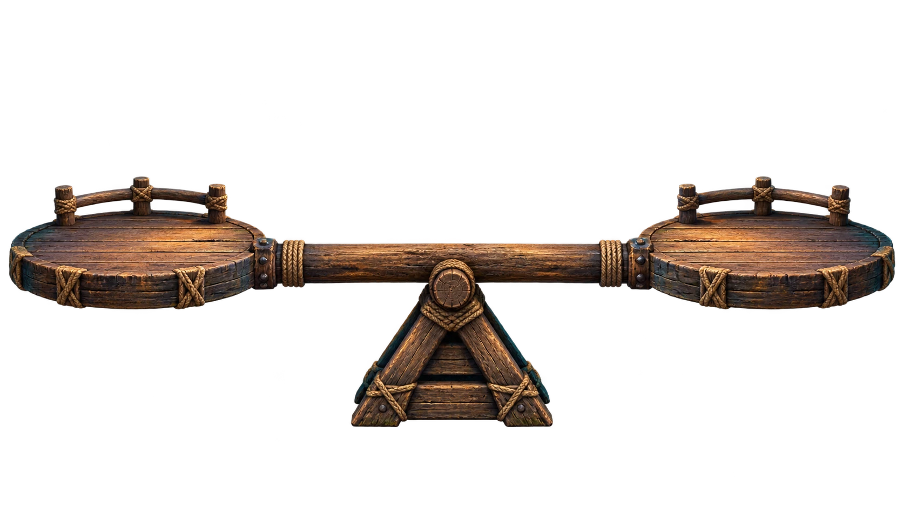

AN ISLAND. A VIRUS. ONE IMPOSSIBLE CHOICE.
One islander is heavier or lighter.Prove who, before the seesaw breaks.

Drag onto a platform, or tap a doll to move them.
A mysterious virus changes one islander’s weight very slightly. The other eleven weigh exactly the same. Appearances reveal nothing.
More than one truth after round three is a loss. The game never invents an impostor to reward a guess. Tied worst-case outcomes are chosen randomly.
This fixed pattern distinguishes all 24 truths. Other sound strategies work, too. Letters always refer to the same islanders.
Read each person’s column downwards. Your three results match that column if they are heavier. Swap L ↔ R, keeping – unchanged, if they are lighter.
This decoder is valid only if you used all three reference arrangements in order. The evidence engine works for every legal arrangement.
Tab to a doll and press Enter to select. Use the move buttons, or ← / → / ↓ for left / right / ground. Escape cancels selection. W weighs. Color hints always include arrow symbols and accessible text. Reduced-motion preferences are respected.
The seesaw is broken, but your evidence points to one truth. Make your final deduction.
A wrong deduction ends this investigation.
Your current evidence will be cleared. All 24 truths will be possible again.